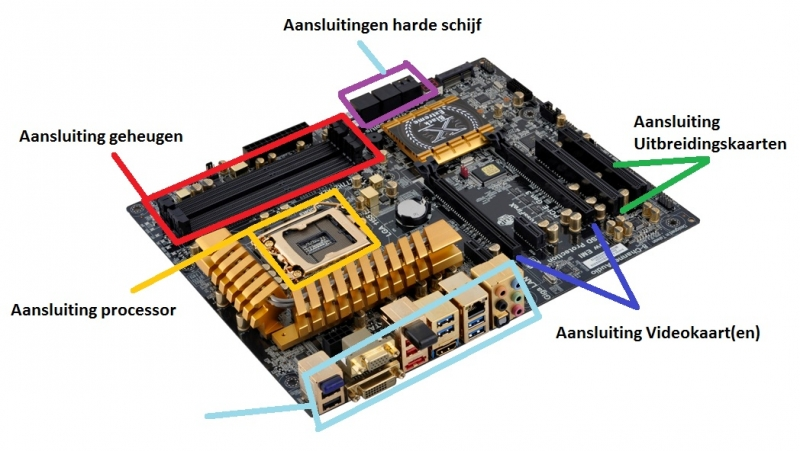

beweeg de muis over de button om het dropdown menu te openen
Het moederbord verbindt alles met elkaar. er zitten veel verschillende dingen op het moederbord,zoals ook de processor. Het moederbord zorgt ervoor dat alle componenten met elkaar kunnen communiceren.
